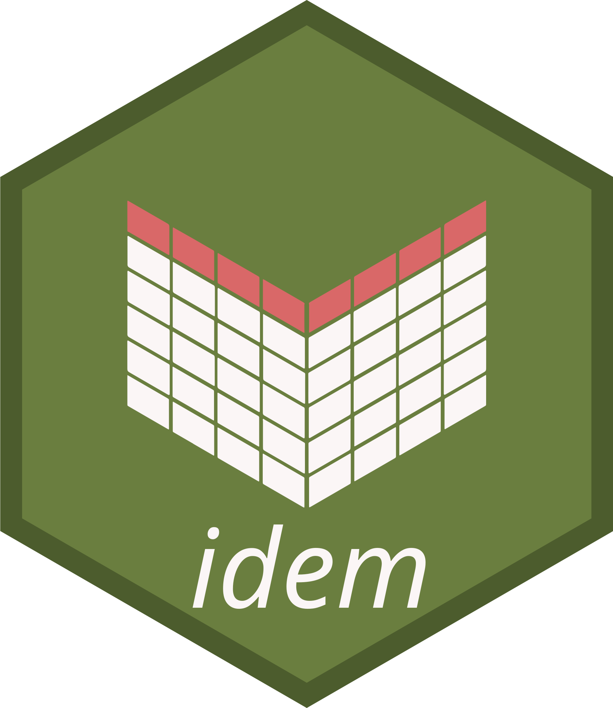

Contributing to idem
This outlines how to propose a change to idem. This package follows tidyverse conventions for code style and workflow — see the tidyverse development contributing guide and code review principles for broader context.
Fixing typos
You can fix typos, spelling mistakes, or grammatical errors in the documentation directly using the GitHub web interface, as long as the changes are made in the source file. This generally means editing roxygen2 comments in an .R file, not a .Rd file. You can find the .R file that generates a given .Rd by reading the comment in the first line of the .Rd file.
Bigger changes
If you want to make a bigger change, it’s a good idea to file an issue first and make sure someone from the team agrees that it’s needed. If you’ve found a bug, please file an issue that illustrates the bug with a minimal reprex (this will also help you write a unit test, if needed). The tidyverse guide on how to create a great issue has useful advice on this.
Pull request process
Fork the package and clone onto your computer. If you haven’t done this before, we recommend using
usethis::create_from_github("impact-initiatives/idem", fork = TRUE).Install all development dependencies with
devtools::install_dev_deps(), and then make sure the package passes R CMD check by runningdevtools::check(). If R CMD check doesn’t pass cleanly, it’s a good idea to ask for help before continuing.Create a Git branch for your pull request (PR). We recommend using
usethis::pr_init("brief-description-of-change").Make your changes, commit to git, and then create a PR by running
usethis::pr_push(), and following the prompts in your browser. The title of your PR should briefly describe the change. The body of your PR should containFixes #issue-number.
Pre-commit hooks
This repository uses pre-commit to run automated checks before each commit. The hook scripts are not committed to the repository — every contributor must install them locally after cloning. The steps below are required, not optional: without them the hooks will not run.
1. Install the precommit R package and activate the hooks
The precommit R package provides a convenient way to install the pre-commit framework and activate the hooks from R. Run the following in an R session from the root of the cloned repository:
install.packages("precommit")
precommit::use_precommit()precommit::use_precommit() installs the pre-commit framework if needed and writes the hook scripts into .git/hooks/. You only need to do this once per clone.
2. Activate the commit-msg hook
The precommit R package only activates the pre-commit stage. This repository also uses a commit-msg hook to validate commit message format. Activate it with one additional command in your terminal:
3. Install air
The air-format hook is a local hook — unlike the other hooks, it is not managed by the precommit R package and will not work unless the air binary is available on your PATH. Install it via uv:
Run hooks manually
To run all hooks against every file without making a commit:
To run a single hook by its id:
Hook reference
| Hook | What it checks / does |
|---|---|
roxygenize |
Rebuilds man/ and NAMESPACE from roxygen2 tags |
use-tidy-description |
Sorts and normalises DESCRIPTION fields |
spell-check |
Spell-checks documentation and vignettes |
lintr |
Lints R source for style and potential issues |
readme-rmd-rendered |
Ensures README.md is up-to-date with README.Rmd
|
parsable-R |
Verifies all .R files parse without error |
no-browser-statement |
Blocks accidental browser() calls |
no-print-statement |
Blocks accidental print() calls |
no-debug-statement |
Blocks accidental debug()/debugonce() calls |
deps-in-desc |
Ensures every used package is declared in DESCRIPTION
|
pkgdown |
Validates the pkgdown site configuration |
check-added-large-files |
Blocks files larger than 200 KB |
file-contents-sorter |
Keeps .Rbuildignore entries sorted |
end-of-file-fixer |
Ensures files end with a newline |
air-format |
Auto-formats R code to the tidyverse style via Air |
conventional-pre-commit |
Enforces Conventional Commits format on commit messages |
forbid-to-commit |
Blocks .Rhistory, .RData, .Rds, .rds files |
Commit message format
The conventional-pre-commit hook enforces the Conventional Commits specification. Every commit message must start with a type prefix:
type: short description in the imperative moodTypes used in this repository:
| Type | When to use |
|---|---|
feat |
A new feature or behaviour |
fix |
A bug fix |
docs |
Documentation changes only |
refactor |
Code change that neither fixes a bug nor adds a feature |
test |
Adding or updating tests |
chore |
Maintenance tasks (dependency updates, config changes, etc.) |
Example: feat: add validate_choices() function
Commits that do not follow this format will be rejected by the hook.
Code style
New code should follow the tidyverse style guide. The
air-formathook applies this automatically on commit — please don’t restyle code that is unrelated to your change.-
To format manually before committing, run:
Or format a single file:
-
To lint R source files:
lintr::lint_package() -
This package uses roxygen2 with Markdown syntax for all documentation. After editing roxygen2 comments, regenerate the docs:
devtools::document() This package uses testthat (v3) for unit tests. Contributions that include test cases are easier to accept.